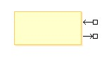
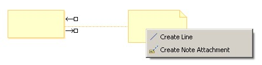
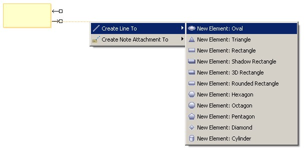
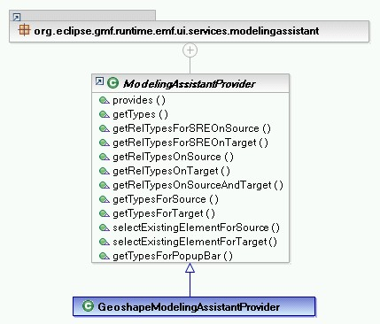
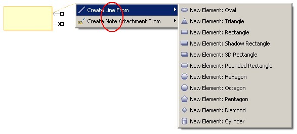
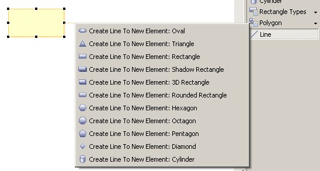
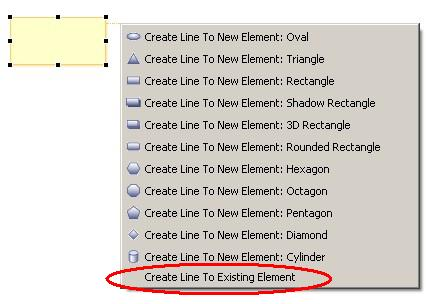
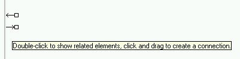

Tutorial: Connection Creation Assistants
|
Version: 0.1 |
Date: December 16, 2005 |
Contents
· Overview
· Creating the Modeling Assistant Provider
· Adding Support for Connection Creation with Connection Handles
· Adding Support for Connection Creation to an Unspecified Source or Target
· Adding Support for Selecting an Existing Element as the Source or Target
· Adding Support for Showing Related Elements with the Connection Handles
· Summary
Overview
This tutorial provides the reader with the steps required to contribute to options available on the connection handle popups and to support connnection completion to an unknown source or target.
References
This tutorial references the following extension point:
org.eclipse.gmf.runtime.emf.ui.modelingAssistantProvidersMore information about this extension point can be found in the SDK
documentation.
This tutorial assumes the connections and shapes to be created can already be created via a palette tool if such a tool existed. For more information about supporting the creation of a shape and connector see the following tutorials:
Introduction
This tutorial will discuss two connection assistant mechanisms:- Connection Handles
- Connection Completion to an Unspecified Target or Source
1. Connection Handles
Use Case:
The connection handles appear when hovering over a shape.

The user selects the incoming or outgoing connection handle and drags the connection to another shape. Upon release of the mouse button, a popup appears listing the possible connection typess that can be created from which the user may select one.

Benefits:
- The user does not have to go back and forth to the palette to create connections.
- The user can create a connection from source to target or from target to source depending on what is most convenient based on their current focus in the diagram.
- The diagram application can list the suggested or most common connection types to be created based on the source and target thus assisting the user in narrowing down the many choices often available on the palette.
2. Connection Completion to an Unspecified Target or Source
Use Case:
The user begins a connection at the source or target shape using either a connection handle or a palette connection tool. The user releases the mouse button on empty diagram space and is presented with the option to create a new element for the shape on the other end of the connection or to use an existing element for this shape.

Benefits:
- The user can create a connection to a shape not on the diagram in one step.
We will use the Geometric Shapes Example to illustrate how to contribute to the popups when using the connection handles or upon connection completion to an unspecified target or source. To gain familiarity with the Geometric Shapes Example, refer to the Geometric Shapes Example Guide.
Creating the Modeling Assistant Provider
The Modeling Assistant service is queried to get the list of connection types and shape types when creation connections to an unspecified source or target or when using the connection handles. Therefore, the first step is to create a Modeling Assistant provider. If your plug-in already has a Modeling Assistant provider for another reason, then the same provider can be used.Create the Modeling Assistant provider class. The abstract ModelingAssistantProvider provides stubs for the methods in the IModelingAssistantProvider so that each method need not be implemented.

Create an extension of the org.eclipse.gmf.runtime.emf.ui.modelingAssistantProviders extension point.
<extension
id="GeoshapeModelingAssistantProvider"
name="%ext.modelingAssistantProvider"
point="org.eclipse.gmf.runtime.emf.ui.modelingAssistantProviders">
<modelingAssistantProvider class="org.eclipse.gmf.runtime.diagram.ui.geoshapes.internal.providers.GeoshapeModelingAssistantProvider">
<Priority name="Lowest"/>
<object
class="org.eclipse.gmf.runtime.diagram.ui.geoshapes.internal.editparts.GeoShapeEditPart(org.eclipse.gmf.runtime.diagram.ui.geoshapes)"
id="GEOSHAPE">
</object>
<context
elements="GEOSHAPE">
</context>
</modelingAssistantProvider>
</extension>The context is used to defer loading of the provider class until applicable. It lists the shapes, in this case all geoshapes, for which to support a connection creation assistant gesture.
Adding Support for Connection Creation with Connection Handles
[back to top]
The getRelTypesOnSourceAndTarget() method determines which connection types can be create between a given source and target when using the connection handles.
The getRelTypesOnSource() method determines which connection types can be created between a given source and an unspecified target shape using the outgoing connection handle.
This method is also needed to make the outgoing connection handle support connection creation when the getRelTypesOnSourceAndTarget() method is being implemented. That is, if there are no providers that return types in the getRelTypesOnSource() method for a given source, then the outgoing connection handle will not support connection creation and may not even appear on that shape.

Similarly, the getRelTypesOnTarget() method determines which connection types can be created between a given target and an unspecified source shape using the incoming connection handle and determines if the incoming connection handle should support connection creation.
The code for the geoshapes example is quite simple. Since the line connection type is bidirectional the result will be the same when creating lines using the incoming or outgoing connection handle. If the desired behavior was for only the outgoing connection handle to appear, then getRelTypesOnTarget() would not be overridden.
public boolean provides(IOperation operation) {
if (operation instanceof GetRelTypesOnSourceOperation
|| operation instanceof GetRelTypesOnTargetOperation
|| operation instanceof GetRelTypesOnSourceAndTargetOperation) {
return super.provides(operation);
}
return false;
}
public List getRelTypesOnSource(IAdaptable source) {
return Collections.singletonList(GeoshapeType.LINE);
}
public List getRelTypesOnTarget(IAdaptable target) {
return Collections.singletonList(GeoshapeType.LINE);
}
public List getRelTypesOnSourceAndTarget(IAdaptable source, IAdaptable target) {
return Collections.singletonList(GeoshapeType.LINE);
}
Notes:
- When showing the connection handles, the Modeling Assistant service asks all providers to contribute to the list of types that appear in the connection handle popups. In the case of the Geoshapes example, the "Line" type is contributed by the GeoshapeModelingAssistantProvider and the "Note Attachment" type is contributed by the DiagramModelingAssistantProvider.
- Prior to showing the popup menus, each type is tested to see if it possible to create the connection between the source and target. If it is not possible to create the connection then that type will not appear on the popup. For example, if it was impossible to create a line between a geoshape circle and a cylinder, then even though line is being contributed to the connection handle popup between a circle and a cylinder it would not appear as an option for the user to choose. This avoids having to duplicate the enablement criteria in the Modeling Assistant provider that already exists elsewhere (e.g. in the edit helpers or view providers).
Adding Support for Connection Creation to an Unspecified Source or Target
[back to top]
The getTypesForTarget() and getTypesForSource()
methods determines the shape types that will appear when creating a
connection to an unspecified source or target using any connection
creation mechanism (e.g. a palette connection tool).

Add the shape types that can be created as the target type when creating
a connection from source to target using the getTypesForTarget()
method. This may be based on both the source type and the connection
type. Similarly, add the shape types that can be created as the source
type when creating a connection from target to source using the getTypesForSource() method.
public List getTypesForSource(IAdaptable target, IElementType relationshipType) {
if (relationshipType.equals(GeoshapeType.LINE)) {
return GeoshapeType.getShapeTypes();
}
return Collections.EMPTY_LIST;
}
public List getTypesForTarget(IAdaptable source, IElementType relationshipType) {
if (relationshipType.equals(GeoshapeType.LINE)) {
return GeoshapeType.getShapeTypes();
}
return Collections.EMPTY_LIST;
}
Notes:
- It is also necessary to update the provides() method appropriately.
- When showing the shape types that can be created, the Modeling Assistant service asks all providers to contribute to the list of shape types.
- Prior to showing the popup menus, each type is tested to see if it possible to create that shape type. If it is not possible to create the shape then that type will not appear on the popup.
Adding Support for Selecting an Existing Element as the Source or Target
[back to top]
Although the Geoshapes Example does not implement this, it is also possible to create a connection to an existing element that may or may not appear on the diagram.

By providing for the SelectExistingElementForTargetOperation, the circled entry will appear when creating a connection to an unspecified target. Similarly, by providing for the SelectExistingElementForSourceOperation, the circled entry will appear when creating a connection to an unspecified source. When the user selects this entry, the selectExistingElementForSource() method or selectExistingElementForTarget() method will be called in the provider that provided for this operation with the highest priority.
public EObject selectExistingElementForSource(IAdaptable target, IElementType relationshipType) {
// Show a dialog from which the user can select an existing element.
// Return the element.
}
public EObject selectExistingElementForTarget(IAdaptable source, IElementType relationshipType) {
// Show a dialog from which the user can select an existing element.
// Return the element.
}Notes:
- It is also necessary to update the provides() method appropriately.
Adding Support for Showing Related Elements with the Connection Handles
Although the Geoshapes Example does not implement this as there is no semantic model, it is also possible to support showing related elements when double-clicking a connection handle.

By providing for the GetRelTypesForSREOnSourceOperation and returning a list of types in the getRelTypesForSREOnSource() method,
the above tooltip will appear when hovering over the outgoing connection handle. When the user double-clicks, the list of types given in the getRelTypesForSREOnSource() method will appear. After the user selects a type, the elements related to the source shape in the manner selected will appear with connections to the source shape.
The expanding of related shapes is not supported generically in GMF. The client application must respond to the org.eclipse.gmf.runtime.diagram.ui.requests.ShowRelatedElementsRequest by returning the related elements.
Similarly, by providing for the
GetRelTypesForSREOnTargetOperation and returning a list of types in the getRelTypesForSREOnTarget() method, this gesture will also be supported on the incoming connection handle.
public List getRelTypesForSREOnSource(IAdaptable source) {
// return relationship types that could be expanded to show related elements
}
public List getRelTypesForSREOnTarget(IAdaptable target) {
// return relationship types that could be expanded to show related elements
}
Notes:
- It is also necessary to update the provides() method appropriately.
- When showing the relationship types that can be expanded, the Modeling Assistant service asks all providers to contribute to the list of types.
Summary
In this tutorial, we did the following:
- Created the Modeling Assistant provider.
- Added support for connection creation with connection handles.
- Added support for connection creation to an unspecified source or target.
- Added support for selecting an existing element as the source or target.
- Added support for showing related elements with the connection handles.